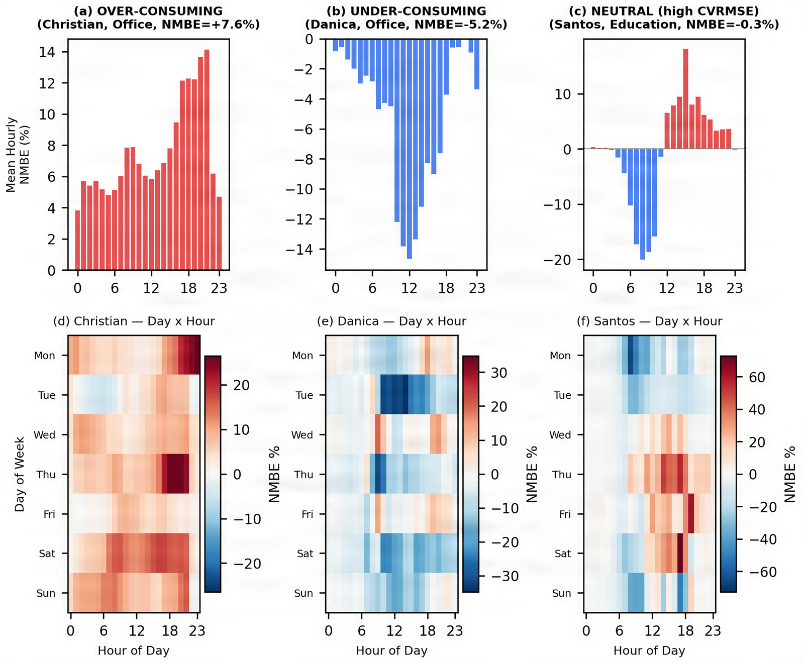

상명대학교 전기공학과 · 대학원 에너지그리드학과
건물과 전력 설비의 에너지를
데이터와 시뮬레이션으로 진단합니다
그린에너지연구소(Green Energy Lab)는 김정욱 교수 연구실입니다. 이 사이트에 올린 연구 그림에는 누가 언제 발행했는지 확인할 수 있는 C2PA 증명서가 붙어 있습니다.

연구 분야
- 건물 에너지 수요 예측
- 건물 에너지 시뮬레이션(BES) 보정
- 발전설비 특성시험과 모델 검증
- 에너지 효율 설계 기준 평가
양현호 에너지그리드학과 석사과정
- 건물 에너지 진단
- 생성형 AI 콘텐츠의 출처증명
- 비디오 워터마킹